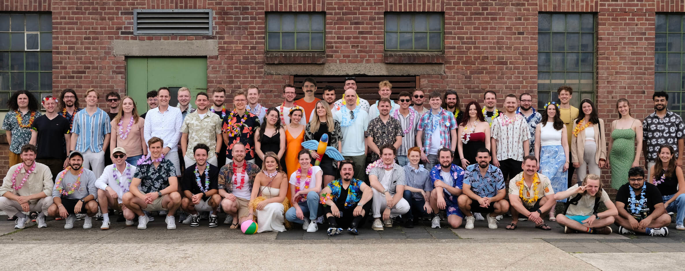
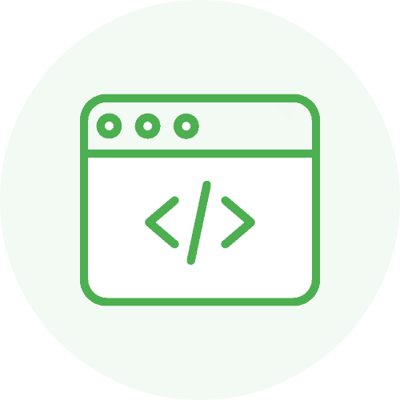
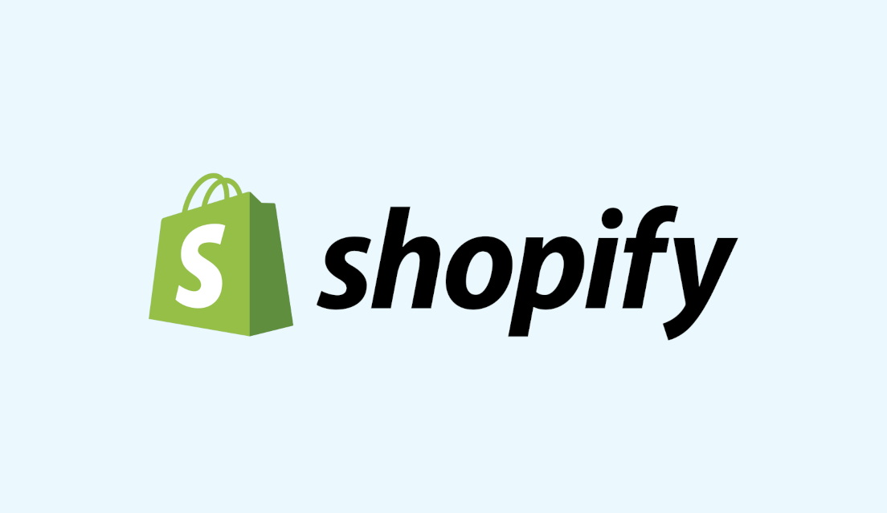
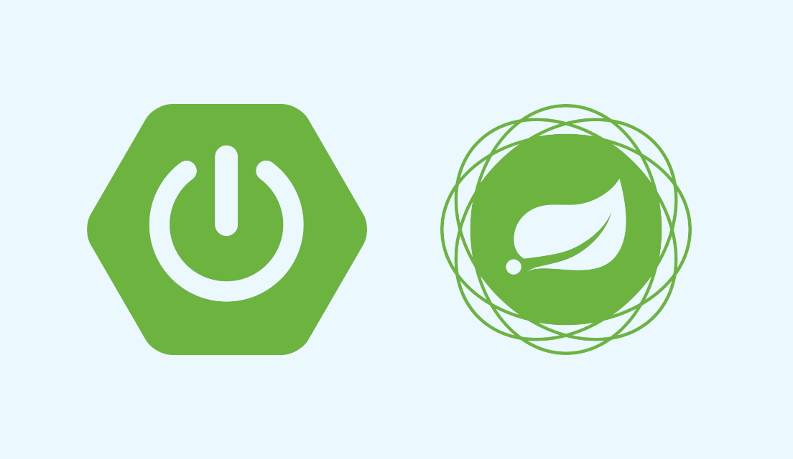
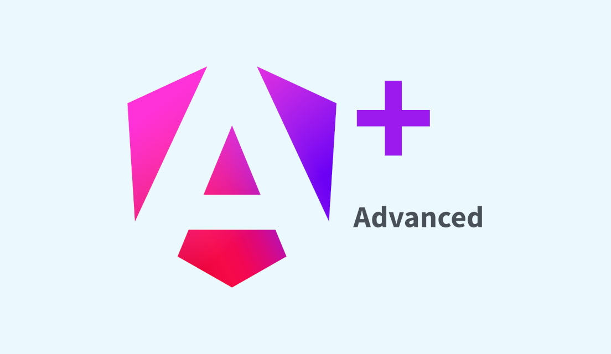
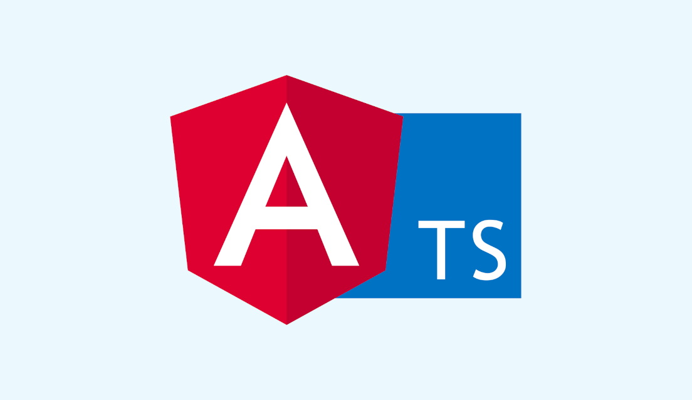
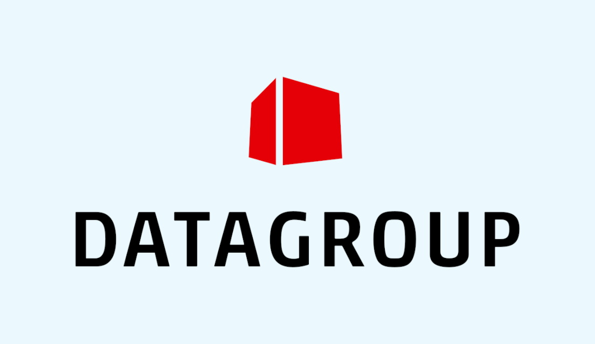
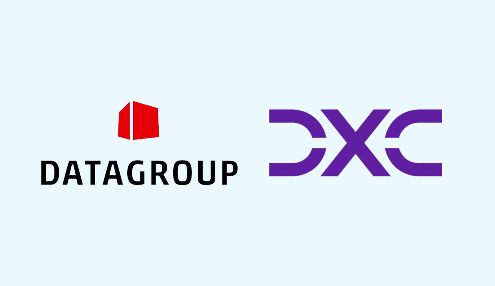
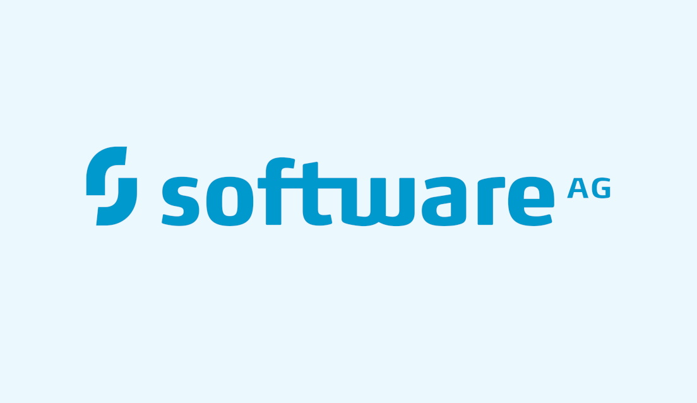

Der neue Entwickler
Das ist Simon
„Du hast eine sehr analytische Denkweise. Behalte dir das bei!“ – ein DXC-Seminarleiter über mich, während meiner Berufsausbildung.
Ohne es teils zu merken, hat mich diese Denkweise immer wieder
zu Tätigkeiten und Branchen geführt, wo mir diese sehr
zugutekam.
So habe ich nach meiner Zeit an der Uni, einen Abstecher in
die Veranstaltungsbranche gewagt und freiberuflich als
Tontechniker gearbeitet.
Erst später in meinem Beruf als Softwareentwickler ist mir
während des Debuggings klar geworden, wie sehr sich diese
beiden Berufe doch ähneln.
Im Prozess des Fehlerfindens gilt: Im Zweifel einfach dem
Signalweg folgen.
In der Tontechnik beginnt der Signalweg z.B. beim
Schallereignis des Sängers und verläuft über das Mikrofon,
diverse Kabel, das Mischpult bis hin zum Lautsprecher. Wird
jedes Element auf diesem Weg stupide geprüft, kann man gar
nicht anders als irgendwann den Fehler finden.
Beim Debugging in der Softwareentwicklung verhält es sich
nicht anders. Der Signalweg startet oft mit einer
Nutzereingabe und verläuft über die ersten Validierungen im
Frontend über eine API ins Backend, durch die Business-Logik
und wieder zurück.
Seit meiner ersten Zeile Code, war ich verhältnismäßig schnell bei der Arbeit, weil ich nie aufgehört habe meine analytischen Denkfähigkeiten zu trainieren. Ich bin Softwareentwickler aus wahrer Leidenschaft und verliere auch in meiner Freizeit nicht die Motivation ein neues Software-Projekt zu starten oder ein Buch über funktionale Programmierung in JavaScript zu lesen.
Mainz
Standort
6+ Jahre
Berufserfahrung

4+
Programmiersprachen
Hohes
Tischtennis Skill-Level
Meilensteine
Meine Geschichte
Im Folgenden gebe ich euch einen Überblick über meine Meilensteine und Erfahrungen, die ich seit der Schulzeit bis heute im Bereich der Softwareentwicklung sammeln durfte.

Juli 2025
Freiberuflicher Auftrag
Simon erhält den Auftrag einen Onlineshop für den Schallplattenvertrieb Chordsandweapons umzusetzen. Dabei setzt er auf seine Angular Erfahrung und stellt sich der Herausforderung eine Shopify Custom Storefront zu entwickeln. Neben seiner Haupttätigkeit bei der Datagroup, sammelt er erste Erfahrungen im eCommerce-Bereich, setzt sich mit der Shopify-API auseinander und lernt GraphQL.

Januar 2025
Fortbildung: Spring Boot & Spring Framework
Nach der Migration des Java Backends nach Spring Boot, besucht Simon die Rheinwerk Fortbildung mit Christian Ullenboom, um wieder Fullstack und damit effektiver im Projekt mitarbeiten zu können.

April 2024
Angular Advanced Intensiv-Schulung
In der Angular Advanced Schulung von workshops.de vertieft Simon sein Wissen über Angular Forms, RxJS & Unit-Testing.
Juli 2023
Interne Fortbildung: Angular Architecture & Nx Workspace
Das Projekt besteht im Frontend aus einer Vielzahl an Git-Repositories, inklusive mehrerer Apps und Libs. Um die Komplexität weiterhin beherrschen zu können und den Build-Prozess zu optimieren, wird Simon das Projekt zu einem Angular Monorepo mit Nx Workspace migrieren. Nach Verstärkung des Teams um einen externen Angular Senior Entwickler, findet eine interne Schulung statt.

Dezember 2022
Fortbildung: Java Erweiterungen II - Vertiefung
Simon nimmt an der dreitägigen Integrata Cegos Schulung für Fortgeschrittenes Java teil.

Februar 2022
Angular & Typescript
Das Regierungsprojekt an dem Simon mitarbeitet, wird im Frontend von JSF nach Angular migriert. Um den Mangel an internem Angular Know-how zu decken, lernt Simon Angular & Typescript und nimmt bereits nach kurzer Zeit eine tragende Rolle im Frontend-Bereich ein.

Juli 2021
DATAGROUP gewinnt neuen Software Entwickler
Nach erfolgreichem Abschluss der Ausbildung wird Simon im Bereich Government der DATAGROUP Consulting Services GmbH als Software Entwickler übernommen.

August 2019
Beginn einer Ausbildung
Nach seinem Praktikum startet Simon mit der zweijährigen Ausbildung bei der DATAGROUP Consulting Services GmbH zum Fachinformatiker mit Fachrichtung Anwendungsentwicklung. Neben der Projektarbeit im Berufsschulalltag findet die Wissensvermittlung zu großen Teilen in Seminaren der DXC Academy statt.
März 2019
Betriebspraktikum bei der DATAGROUP Consulting Services GmbH
Simon startet als Praktikant bei der DGCS in Mainz und unterstützt ein Regierungsprojekt mit dem Schreiben von automatisierten Selenium-Tests in Java. Er lernt den Projektalltag mit Jira, Confluence und Scrum kennen und nach guter Zusammenarbeit mit seinem zukünftigen Team lässt eine Verlängerung des Praktikums nicht lange auf sich warten.

Februar 2014
Werkstudent bei Software AG
In der Abteilung University Relations unterstützt Simon als Werkstudent bei der Entwicklung eines Übungsszenarios in Java im Big Data Bereich. Mit Szenarien dieser Art wird Studenten der kostenlose Zugang zu Produkten der Software AG gewährt, wie in diesem Fall die Complex-Event-Processing Software "Apama". Es werden nachhaltig Beziehungen zu künftigen Uni-Absolventen aufgebaut.
Oktober 2012
Beginn eines Informatikstudiums an der TU Darmstadt
Die ersten Vorlesungen über funktionale Programmierung prägen Simons Arbeit als Entwickler und Code-Qualität nachhaltig. Auch heute greift er noch intuitiv auf dieses Wissen zurück.
September 2009
Erste Programmierkenntnisse
Simon sammelt in der Phase des Abiturs erste
Programmierkenntnisse in Delphi bzw. objektorientiertem
Pascal.
In der 13. Klasse ist er der "Last Man Standing" als letzter
Teilnehmer, der den Informatik-Kurs nicht abgewählt hat.